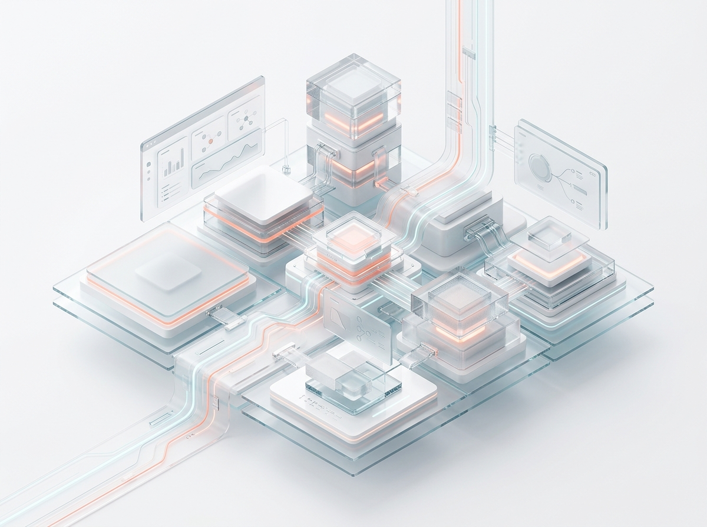
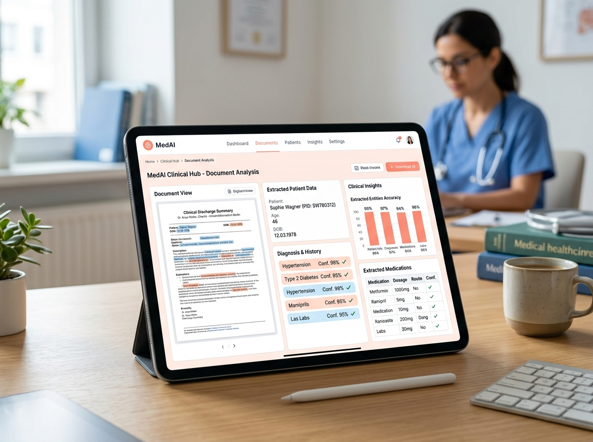
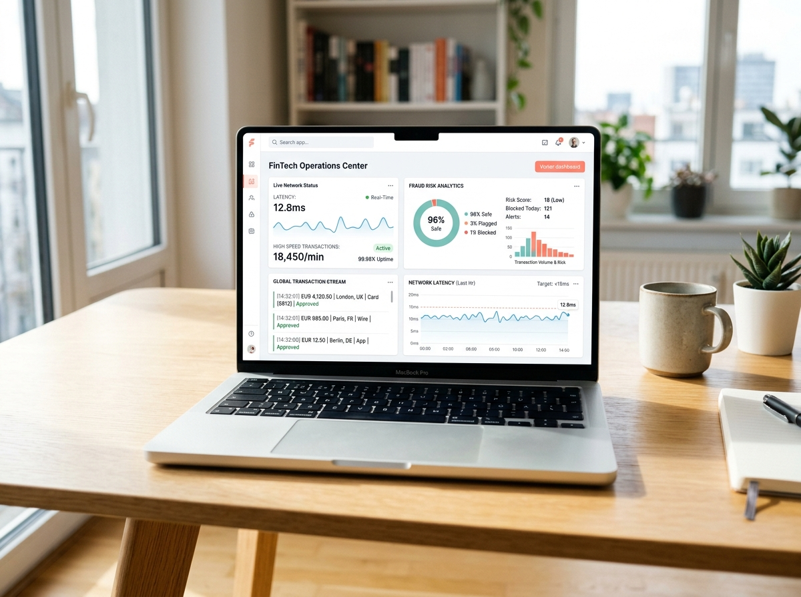

Digitale Produkte, die komplexe Anforderungen in robuste Software verwandeln.
Wir sind Cypherox — eine europäische Software- und KI-Engineering-Einheit. Keine Subunternehmer-Ketten, kein Agentur-Overhead. Wir entwickeln produktionsreife KI-Systeme, geschäftskritische Plattformen und hochverfügbare Cloud-Architekturen von der Konzeption bis zum 24/7-Betrieb.

Gegründet 2015. Kontinuierlich gewachsen als inhabergeführte europäische Engineering-Einheit.
Erfolgreich implementierte Web-, Cloud-, Daten- und KI-Projekte weltweit.
Fest angestellte Entwickler, Systemarchitekten, Data Scientists und DevOps-Experten.
Über 150 verifizierte Enterprise-Bewertungen mit Bestnoten in EMEA.
Technologie-Services ausgerichtet auf Ihre Geschäftsziele.
Die meisten Unternehmen koordinieren separate Dienstleister für KI, Software, Cloud und Daten. Cypherox bündelt diese Kernbereiche in einem eingespielten Engineering-Team ohne Schnittstellenverluste.
KI- & Machine Learning Engineering
Validierte KI-Systeme rund um Ihre Daten, Workflows und Geschäftsregeln — gebaut für den zuverlässigen Produktiveinsatz.
Software- & Plattform Engineering
Web, Mobile, APIs und Microservices — hochgradig skalierbar, modular aufgebaut und passgenau auf Ihre bestehende Basis abgestimmt.
Data- & Cloud-Engineering
Die robuste Basis unter Ihren Systemen: Verlässliche Datenflüsse, sichere Cloud-Umgebungen, Observability und FinOps-Kostenkontrolle.
Produkt- & Technologieberatung
Architektur-, Scope- und Technologieentscheidungen vor der ersten Zeile Code entscheiden maßgeblich über Ihren langfristigen Projekterfolg.
Enterprise-KI gebaut für geschäftskritische Produktivsysteme.
Während Prototypen schnell erstellt sind, scheitern viele KI-Initiativen im realen Betrieb an Datenschutz, Latenzen oder fehlender Integration. Cypherox baut produktionsreife KI-Systeme, die höchsten europäischen Sicherheitsstandards genügen.
- Air-Gapped Inferenz • Souveräne Datenverarbeitung ohne Drittanbieter-Speicherung.
- Deterministische Validierung • Strikte Guardrails verhindern Halluzinationen in geschäftskritischen Prozessen.
- Vollständige IP-Übertragung • Alle Modelle, Pipelines und Architekturen gehören zu 100% Ihnen.
Innovation, entwickelt von Cypherox.
Wir messen Erfolg nicht in Zeilen Code, sondern in operativer Effizienz, reduzierten Latenzen und verifizierten Geschäftserfolgen unserer Kunden.
Automatisierte klinische NLP-Pipeline für europäischen Diagnostikkonzern
Manuelle Extraktion unstrukturierter Patientenberichte führte zu Verzögerungen und Compliance-Risiken. Cypherox implementierte eine air-gapped LLM-Pipeline mit strenger DSGVO-Auditierung und automatischer Validierung.


Sub-15ms Transaktions-Scoring für kontinentale Neobank
Steigende Transaktionsvolumina erforderten ein Betrugserkennungssystem mit extrem niedrigen Latenzen und BaFin-konformer Nachvollziehbarkeit. Kafka-basierte Streaming-Architektur mit Echtzeit-Inferenz.
Dynamische Tourenoptimierung für 4.200 Nutzfahrzeuge
Feste Tourenpläne verursachten hohe Leerkilometer. Hybrider Optimierungs-Algorithmus bewertet Fahrzeugtelemetrie und Kundenaufträge sekundengenau neu.
Softwareentwicklung mit Sicherheit & Risiko im Blick.
Bei Cypherox integrieren wir Compliance und Datenschutz in jede Schicht unserer Architektur. Wir bauen Systeme, die anspruchsvollen europäischen Gesetzen und Branchenstandards von Tag 1 an standhalten.
Compliance-Dossier anfragenAuditierte Informationssicherheits-Managementsysteme (ISMS) für höchste Standards bei Schutz und Vertraulichkeit.
Unabhängig geprüfte Kontrollen für Sicherheit, Verfügbarkeit und Integrität der Entwicklungsprozesse.
Vollständige Einhaltung europäischer Datenschutzstandards mit souveräner Datenhaltung im EU-Rechtsraum.
Revisionssichere Banking- und Zahlungsarchitekturen für regulierte Finanzinstitute und FinTechs.
Konforme Softwareentwicklung für Medizinprodukte und sensible Gesundheitsdaten (HIPAA- & MDR-konform).
Business Continuity Management und garantierte Verfügbarkeits-SLAs für geschäftskritische Systeme.
Lösungen für komplexe Herausforderungen in Schlüsselbranchen.
Finanzdienstleistungen & FinTech
Kernbankenlösungen, algorithmisches Scoring, Betrugserkennung und PSD2-konforme Open-Banking-Schnittstellen.
- Echtzeit-Zahlungsabwicklung & Scoring
- Revisionssichere Audit-Trails
- PCI-DSS-konforme Verschlüsselung
Gesundheitswesen & MedTech
Telemedizin-Plattformen, KI-gestützte Befundungsassistenten und interoperable FHIR/HL7-Integrationsschichten.
- Air-gapped KI für Patientendaten
- ISO 13485 & MDR-Konformität
- KIS-Schnittstellenanbindung
Logistik, Lieferkette & Mobilität
Telematik-Integrationsplattformen, dynamische Tourenoptimierung und skalierbare Warehouse-Management-Systeme.
- Echtzeit-Tracking via MQTT & Gateways
- Automatisierte Tourenplanung
- Sub-Sekunden Reaktionszeiten im Lager
Industrie 4.0 & Fertigung
Predictive Maintenance, Telemetrie und Edge-Computing-Systeme zur präventiven Vermeidung von Fertigungsstillständen.
- Edge-Inferenz direkt an der Linie
- OPC UA & SPS-Schnittstellen
- Predictive Maintenance mit Vorlauf
E-Commerce & Digital Retail
Headless Commerce, KI-Personalisierung und skalierbare Backend-Systeme für Plattformen mit Spitzenlasten.
- Headless E-Commerce mit Next.js
- KI-Produktempfehlungen & Pricing
- Warenwirtschafts-Synchronisation
B2B SaaS & Plattformen
Multi-Tenant-Architekturen, rollenbasierte Zugriffskontrollen und hochperformante Schnittstellen für Plattformbetreiber.
- Skalierbare Multi-Tenant-Datenbanken
- Self-Service Abrechnung & Stripe
- Vollständige Observability & SLA
Entwickelt für Geschwindigkeit, gebaut für Großprojekte.
Geschwindigkeit ohne Struktur erzeugt spätere Probleme. Struktur ohne Geschwindigkeit führt zu Verzögerungen. Wir bauen Systeme, die termingerecht live gehen und langfristig wartbar bleiben.
Früh ausliefern
Lauffähige Software erreicht Ihre Umgebung in Wochen. Iterative Releases schaffen messbaren Geschäftswert, bevor das Gesamtprojekt abgeschlossen ist.
Für Wandel konstruieren
Jedes System verkraftet neue Anforderungen, Schnittstellen und Laststeigerungen ohne aufwendige Neuentwicklung. Modularität ist unser Standard.
Konsequent testen
Automatisierte Testabdeckung, strukturierte Code Reviews und kontinuierliche Deployment-Validierung sind fest verankert. Qualität entsteht im Prozess.
Mit Transparenz betreiben
Integrierte Überwachung, zentrales Logging und Alerting. Sie behalten jederzeit den vollen Überblick über Systemgesundheit und Handlungsbedarf.
Kompetenz über moderne Technologien hinweg.
Unsere Ingenieure arbeiten mit den Stacks, die Ihr Projekt erfordert. Wir wählen Werkzeuge nach dem Problem aus, nicht nach Modetrends.
Arbeiten Sie direkt mit erfahrenen Senior-Ingenieuren.
Keine undurchsichtigen Junior-Teams oder rotierende Freelancer. Unsere Kunden arbeiten direkt mit fest angestellten Lead-Entwicklern zusammen.
Hardik
Spezialisiert auf autonome Agentensysteme, LLM-Feinabstimmung und skalierbare Inferenzpipelines. Leitete KI-Implementierungen für MedTech- und FinTech-Kunden in ganz Europa.
Krupa
Verantwortlich für skalierbare Web- und Plattformarchitekturen. Tiefgreifende Erfahrung mit Microfrontends, performance-kritischen React-Systemen und robusten Node.js Backends.
Akash
Architekt für hochverfügbare Multi-Cloud-Infrastrukturen. Spezialisiert auf Kubernetes-Orchestrierung, automatisierte CI/CD-Pipelines und Sicherheitskonformität nach ISO 27001.
Was Technologie-Leader über Cypherox sagen.
Langjährige Partnerschaften entstehen durch verlässliche Lieferungen und saubere Codequalität. Unsere Kunden schätzen den direkten Austausch mit unseren Architekten.
„Cypherox hat unsere Erwartungen in Sachen Zuverlässigkeit und Codequalität weit übertroffen. Die Entwickler denken proaktiv mit, hinterfragen schwammige Anforderungen und liefern termingerecht saubere Software.“
„Die Umstellung auf die neue Cloud-Architektur verlief ohne eine Minute Ausfallzeit. Beeindruckende technische Tiefe und extrem reaktionsschnelle Kommunikation während der gesamten Projektphase.“
„Wir arbeiten seit über drei Jahren mit Cypherox zusammen. Sie fühlen sich wie unser eigenes internes Kernteam an, nicht wie ein externer Dienstleister. Höchstes Vertrauen.“
Nicht das Passende gefunden?
Jedes Digitalvorhaben bringt individuelle architektonische und rechtliche Fragestellungen mit sich. Sprechen Sie direkt mit unseren Lead-Architekten.
Frage direkt stellen